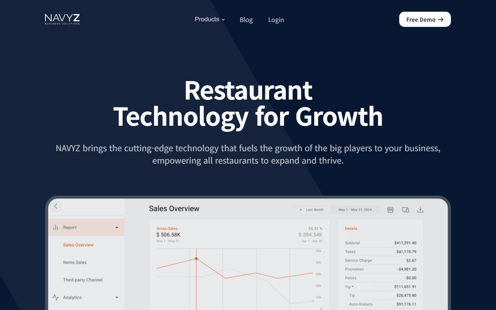
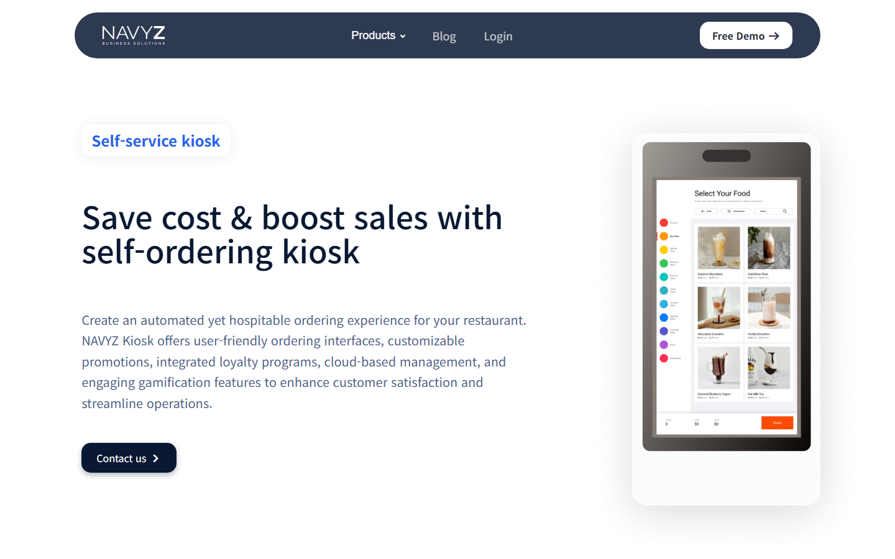
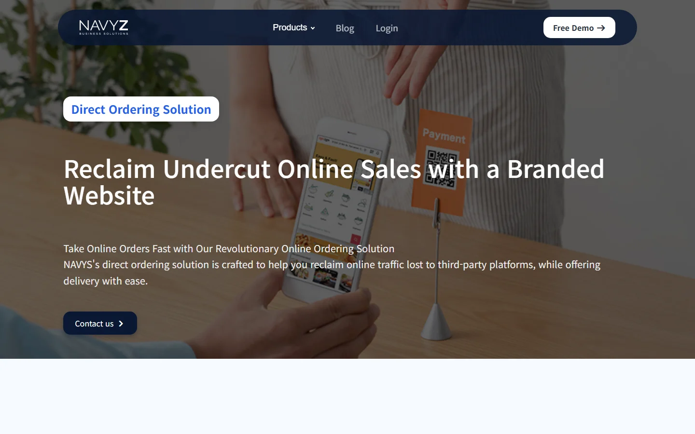
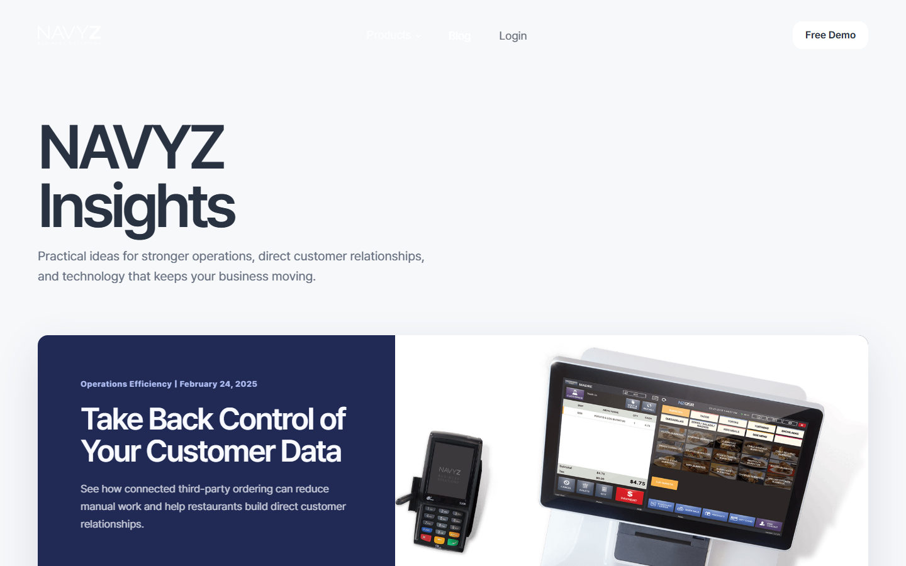
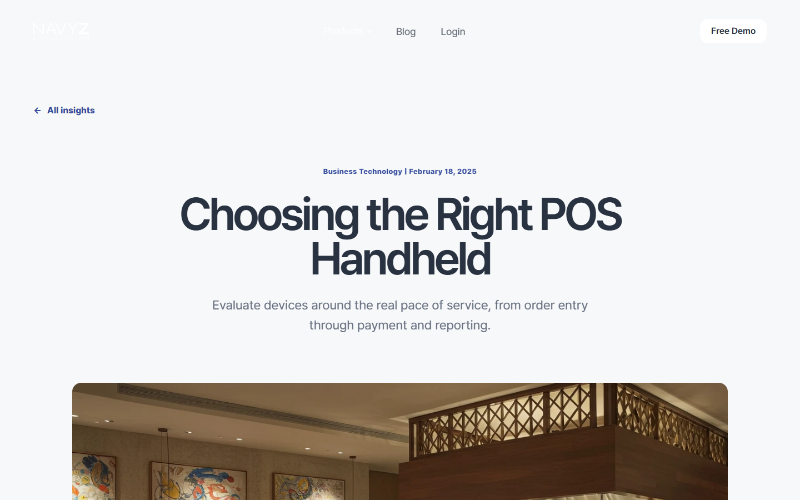
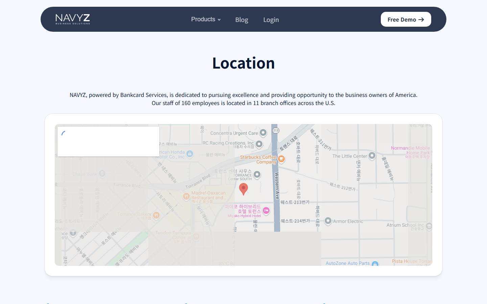
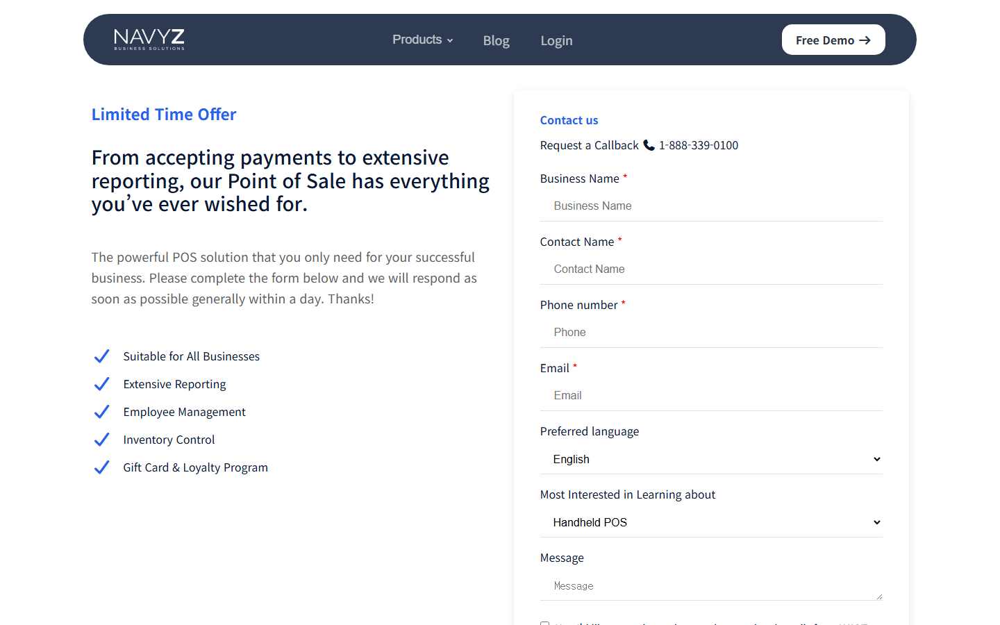
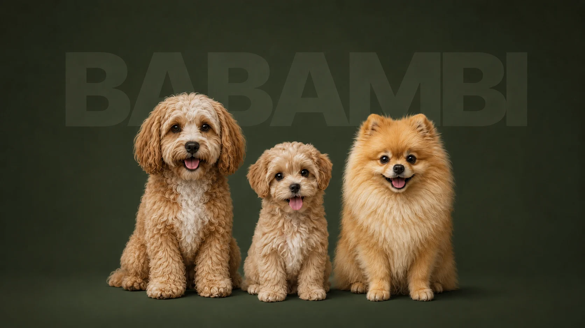

Overview
레스토랑을 대상으로 POS · 키오스크 · 온라인 주문을 파는 회사의 영문 브랜드 사이트. 제품이 많아 무엇부터 보여줄지가 관건이었습니다.
My Role
팀 작업이지만 디자인을 제외한 전 과정을 담당했습니다. 마크업, 스타일, 인터랙션 구현까지 직접 했습니다.
Build
메인 · 키오스크 · 온라인 주문 · 매장 안내 · 문의 · 로그인 · 블로그 목록과 상세 6종 · 약관 · 개인정보. 총 16페이지.
Stack
- HTML
- CSS
- JavaScript
- Responsive
Screens







Web
스크롤하면 나타나는 효과
메가 메뉴 (제품 카테고리 펼침)
모바일 메뉴 토글
메인 · 제품 슬라이더
스크롤에 맞춘 모션
끊김 없이 흐르는 로고 띠
반응형 그리드
블로그 목록 · 상세
문의 · 로그인 폼
아이콘 시스템
코딩
디자인 협업
